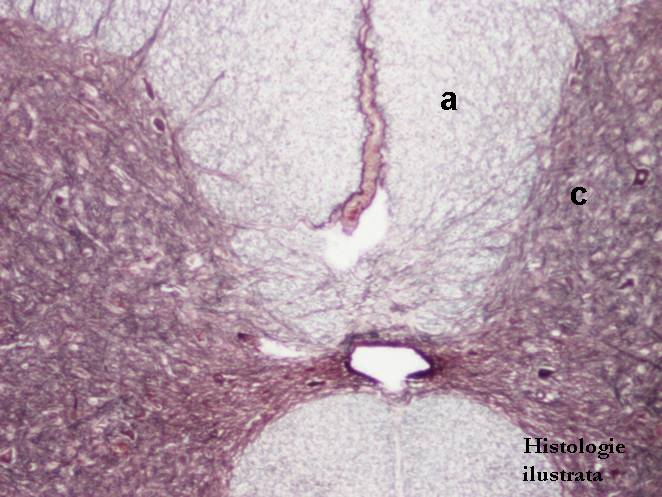
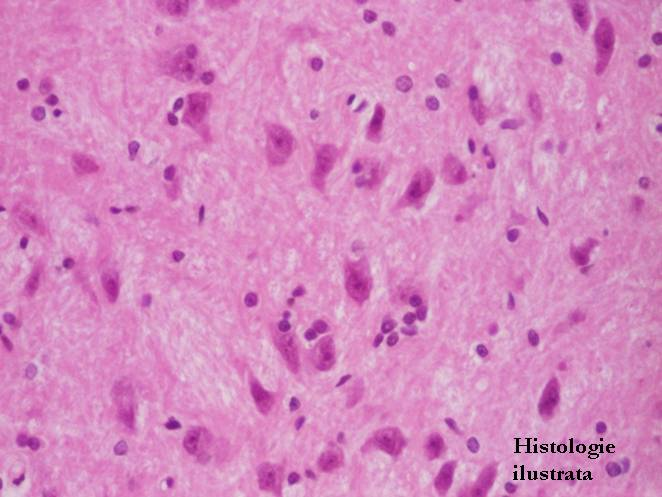
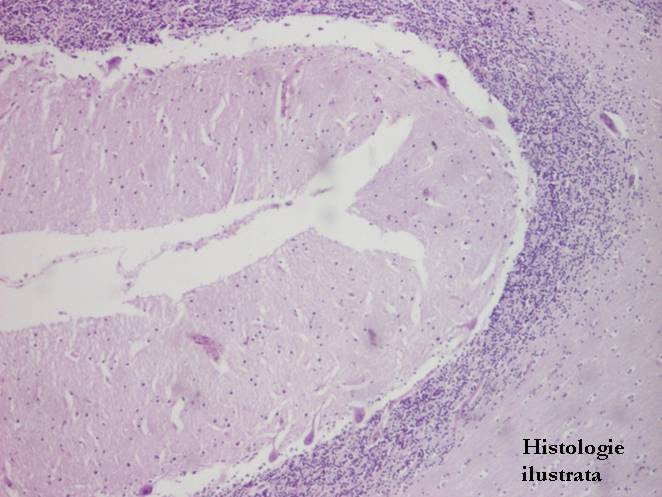
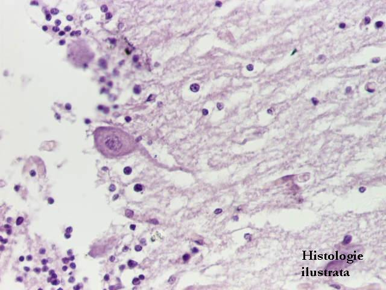
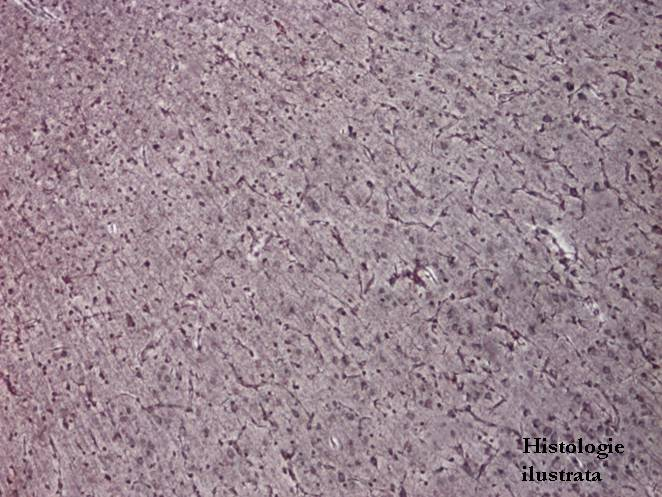
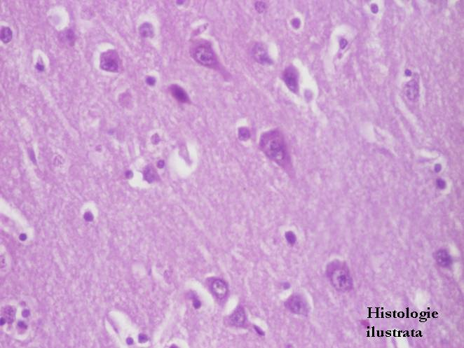
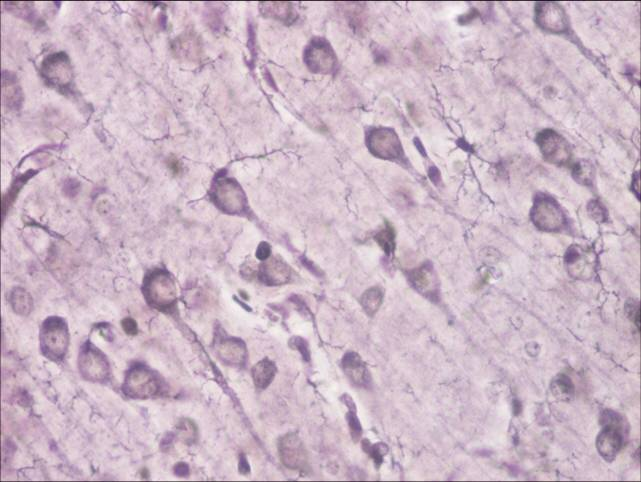
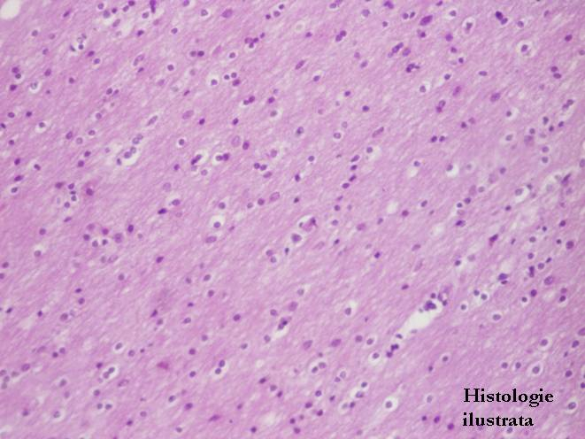

Chap.4 - Tissu nerveux
4.2. Système nerveux central




Fig. 155 - Moelle épinière – substance blanche (a.) et substance grise (c.), imprégnation argentique x 40
Fig. 156 - Moelle épinière – substance blanche et substance grise, H.E.x 40
Fig. 157 - Moelle épinière – neurones multipolaires de la substance grise,
H.E. X 100
Fig. 158 - Moelle épinière – neurones multipolaires, H.E. X 400






Fig. 159 - Cervelet – H.E. X 40
Fig. 160 - Couche granuleuse (g.), couche des cellules de Purkinje (P.), couche moléculaire (m.) – cervelet, H.E. X 100
Fig. 161 - Cellules de Purkinje – cervelet, H.E. X 400
Fig. 162 - Cortex cérébral – neurones, imprégnation argentique X 40





Fig. 163 - Cortex cérébral – neurones, H.E. X 200
Fig. 164 - Cortex cérébral – neurones, H.E.X 400
Fig. 165 - Neurones et cellules gliales – cortex cérébral, imprégnation argentique X 200
Fig. 166 - Substance blanche – hémisphères cérébraux, H.E. X 100